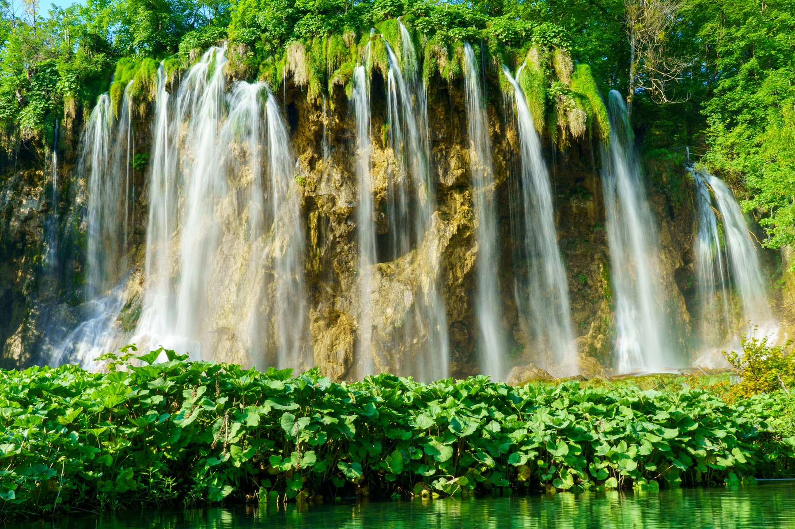
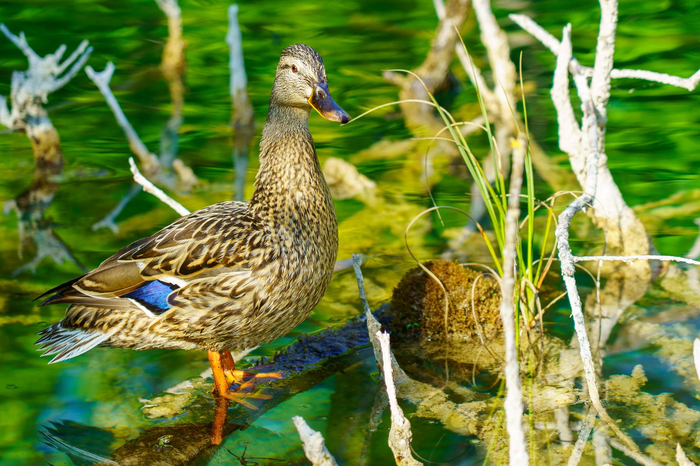
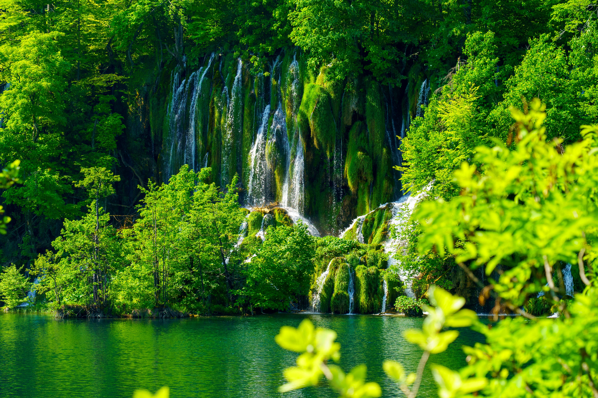
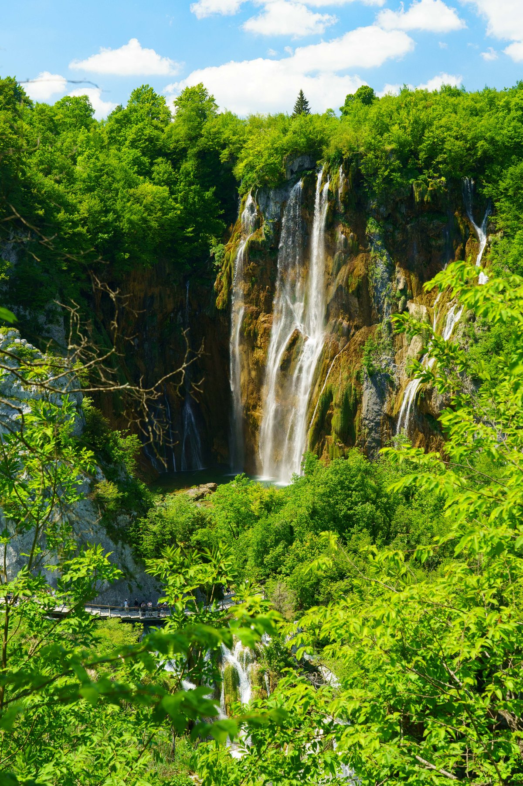
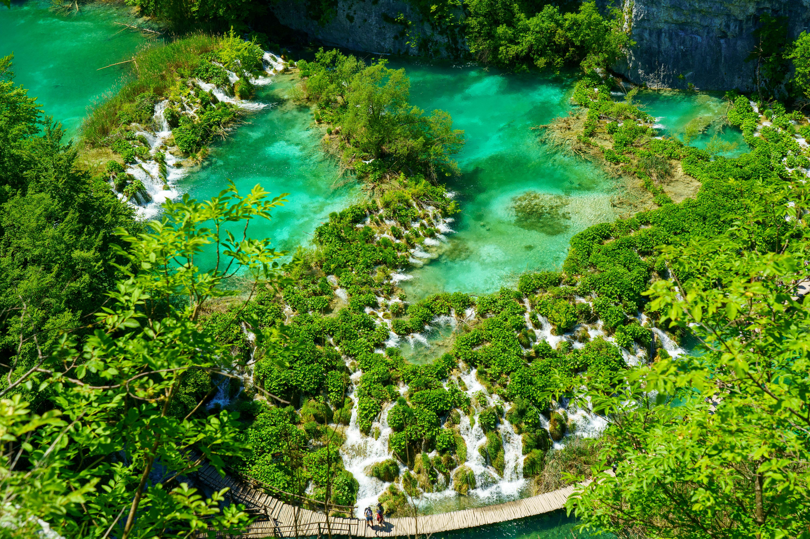

Plitvice Lakes
Plitvice Lakes National Park is Croatia at its most otherworldly — a cascading system of sixteen terraced lakes, linked by waterfalls and turquoise pools so clear you can see straight to the limestone floor. Wooden boardwalks thread directly over and through the water, putting you close enough to feel the mist off Veliki Slap, the park's tallest falls at 78 meters. The whole place has a hushed, almost primeval feel — dense beech forest, moss-covered rock, and the constant white noise of moving water — broken only by the occasional mallard drifting through the reeds or a hiker pausing mid-boardwalk to take it all in. It's less a single sight than a slow, immersive walk through a landscape that keeps unfolding: a long exposure over one waterfall, a hidden cascade around the next bend, and an aerial view from above that makes the whole canyon look like something painted rather than photographed. Plitvice rewards unhurried time — this is a park meant to be walked slowly, not checked off.




